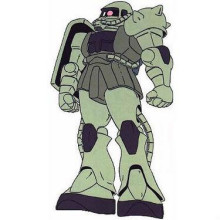
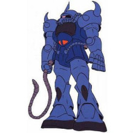
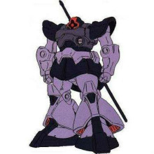
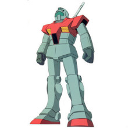
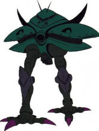

本机就是在因缘际会之下由阿姆罗驾驶而在GUNDAM历史上留下赫赫之名的初代高达，一提到“高达”这个词，大家首先联想起的想必也是它。 本机是V计划里RX-78系列的二号机，也是GUNDAM史上第一次MS战的参与者，并在一年战争中后期创造了奇迹般的战果，被吉恩军驾驶员称为“白色恶魔”。 然而本机得以称为“最强”的最大原因，却是驾驶员阿姆罗·雷的“NT”能力在战场上的充分运用。本机在阿·巴瓦·库会战中与夏亚所驾驶的MSN-02吉恩号交战时双双被毁。
机体型号：RX-78-2
机体类型：泛用多目的试作型MS
制造商：地球联邦军
所属：联邦
初次配备：U.C.0079
内部环境：只容纳驾驶员的标准核心调节器系统
尺寸全高：18.5米
本体重量：43.4吨
全备重量：60.0吨
发动机功率：1380KW
推进力：24000KG×2+3750KG×2=55500KG
加速度：0.93G；地上速度：165千米/时
传感器探测有效半径：5700米；180°姿势变换所需时间：1.5秒（使用磁气覆膜技术后需1.1秒）
固定武装：光束军刀×2，额定输出功率0.38MW；头部60mm火神炮×2
选用手部武器：专用光束步枪；超级火箭筒；高达锤；超级锤；Super-Napalm；专用盾牌

根据MS-05扎古I型的战场报告于U.C.0077年8月正式开始生产MS-06扎古Ⅱ型MS，相对于扎古I型，扎古Ⅱ性的动力，机动性，外部细节等方面都有了很多改进，并且成为高达0079中吉翁军产量最大的一个MS系列，同时这型MS也作为了高达作品的经典标志被其后的各代高达作品继承或借鉴。 作为量产型的制式装备，相对于扎古I，也采用了更符合实战环境的较深的单色涂装，不过也诞生了许多带有机师专用涂装的专用机体，例如夏亚所使用的红色扎古，不仅使用了鲜红色作为标志涂装，同时机体也强化了动力系统，使其出力达到三倍，加上作为表示战斗分组的队长标识的头部尖角，被广大高达迷爱称为“红色有角三倍速”，这个特点同扎古一道被其后的各大高达作品传承。
机体型号：MS-06F
机体类型：泛用量产型MS
制造商：吉恩尼克公司
所属：吉恩
初次配备：U.C.0079
内部环境：标准式驾驶舱（部分机体后来升级到全周天屏幕/线形坐椅式坐舱系统）
尺寸全高：17.5米
本体重量：58.1吨
全备重量：73.3吨
发动机功率：951KW
推进力：2×20500KG+2×1000KG=43000KG
加速度：0.59G
装备及设计特征：地上速度：88千米/时
选用手部武器： 105mm机枪，弹鼓供弹，100发1弹鼓，备用弹鼓收纳于后方裙甲上；120mm机枪，弹鼓供弹，100发1弹鼓，备用弹鼓收纳于后方裙甲上；280mm火箭筒，4发1弹舱，收纳于后腰装甲上；热能斧，收纳于侧面裙甲上

将YMS-07B予以量产就得到了MS-07B。除了部分装甲的形状略有不同之外，MS-07B与YMS-07B并没有什么大的区别。MS-07B是正式进行大规模量产的机体，大战期间约生产了200架左右，基本都是在月面的格拉那达基地及北美的加利福尼亚基地的原MS-06J的生产线上生产的； 老虎系后来的机体也基本都是自B型衍生出来的。与MS-06F一样，MS-07B也有专为指挥官设计的典礼型机，基西莉亚·扎比少将的心腹马·克贝所驾驶的即为其中之一。
机体型号：MS-07B
机体类型：陆战用量产型MS
制造商：吉恩尼克公司
所属：吉恩
初次配备：U.C.0079
内部环境：标准式驾驶舱
尺寸全高：18.7米
全备重量：75.4吨
发动机功率：1034KW
推进力：40700KG
加速度：0.54G
装备及设计特征：地上速度：99千米/时
固定武装：指部5连装75mm机关炮
选用手部武器：120mm机关炮；电热鞭；热能军刀；专用盾牌

吉翁军高层对得到的YMS-09的测试数据相当满意，因此在测试结束之后的数周内，由设计人员对YMS-09的系统进行了微调整之后，就正式采用了MS-09的制式，开始进行先期量产。量产一号机于7月1日完成。 从外观上看，量产型与试作型的主要区别在于：量产型彻底摆脱了扎古的影子，而从试作型中我们还能隐约看出扎古的风格；量产型的头部传导管藏于机体内部，而试作型的头部传导管是外露的。
量产型大魔： 量产型大魔，位于背部和胫里部的推进器跟头部传导管一样采用了完全内藏式，而试作型采用的是便于散热的外露式，这样量产型的散热性虽不及试作型，但防御性及防尘性大大提高了。 量产型的热能军刀是斜插在背部的，而试作型的热能军刀则采用了水平放置，机体右侧设置了火箭炮专用的插梢，左侧设置了PT-1型通信装置； 量产型的胸部装备了接近战用的扩散光束炮，但由于此时吉恩军还未掌握能量CAP技术，扩散光束炮的威力相当低，只能起到牵制作用。MS-09型虽然在7月初就开始量产，但由于新机轴的气垫飞行器装置问题，耽误了驾驶员的机种转换训练，因此直到11月下旬完成了机种转换训练的驾驶员才配备到欧洲、亚洲及非洲各个战线上，使大魔没有完全发挥出应有的作用。 MS-09的驾驶员中最有名的该是曾在鲁姆会战中擒获雷比尔将军的黑色三连星小队了，非常可惜的是，他们在与隶属于白色要塞的RX-78-2高达交战时被全灭。
机体型号：MS-09
机体类型：陆战用量产型MS
制造商：兹玛德公司
所属：吉恩
初次配备:U.C.0079
内部环境:标准式驾驶舱
尺寸全高：18.6米
本体重量：62.6吨
全备重量：81.8吨
发动机功率：1269KW
推进力：58200KG
加速度：0.71G
装备及设计特征：传感器探测有效半径：5400米
固定武装：胸部扩散光束炮
选用手部武器：360mm火箭炮；热能军刀

在一年战争中登场的联邦军标准量产机，缩写为“GM”，展开来就是“GUNDAM Massproduction”，最初作为RX-78的简易生产化机型的它的系谱贯穿了整个U.C.世纪，由于强调生产效率，本机在性能上较为平庸，但将光束军刀等兵器作为了标准配备，虽然光束喷枪在陆上多数被更为实用可靠的实弹机枪代替，不过在宇宙的中近程威力非常可靠。 由于性能的相对低下，“吉姆”的真正价值往往要在以小队为单位以上的集团战斗中才能发挥出来。一般以三机为一小队、以十二小队编成一中队单位的基本战斗队型。 交战时，多以一中队与10至20小队的“铁球”混合编队协同作战，接近战由“吉姆”应付，而“铁球”则以中、长距离作炮击支援。虽然这两种兵器都不及敌方，但都以数量补足。大战后期，由本机型所衍生的更强化的改良型相继开发成功，成为联邦军的绝对主力。 “吉姆”系列所发挥的“人”海战术屡屡成为联邦军胜利的保证。一年战争结束后，联邦军对本机进行了进一步的检讨，修正了大量设计上的毛病，作为次世代MS主力新型的衍生机体也持续开发着，使本机终于成为对后世量产MS影响深远的重要机种。
机体型号：RGM-79
机体类型：泛用量产型MS
制造商：地球联邦军
所属：联邦
初次配备：U.C.0079
内部环境：标准式驾驶舱
尺寸全高：18.5米
本体重量：41.2吨
全备重量：58.8吨
发动机功率：1250KW
推进力：24000KG×2+3750KG×2=55500KG
加速度：0.94G；地上速度：102千米/时
装备及设计特征：传感器探测有效半径：6000米；180°姿势变换所需时间：1.6秒
固定武装：光束军刀×1，额定输出功率0.38MW；头部60mm火神炮×2
选用手部武器：光束手枪；专用盾牌；90mm机关枪

以弘扬吉翁军的威信而开发的对要塞攻击用巨大MA，就是这部MA-08。本来MA-08是用来攻占地球联邦军总部——加布罗基地用的，但是由于制造计划的延误而放弃了，最后在所罗门攻防战中被配备到了实战之中，而驾驶员则是吉恩宇宙军司令——多兹鲁中将。 在一年战争中，MA-08作为一种机动兵器，不论体积还是火力，都雄居榜首。 机体中央装备有一门一炮就能击沉一艘战舰的强力大型偏转MEGA粒子炮，还内藏有能做全周围攻击的28门MEGA粒子炮。两只脚上还各装有3枚爪型对空防御用导弹。这部机体最奇特的地方是其第一次搭载了I-field发生器，此发生器能在机体周围形成一层对光束用电磁波膜，能将战舰主炮级光束兵器所发射的光束有效的化解。这样的装备，使得它的攻击力和防御力都无懈可击，但同时也带来了一个重大问题。由于采用了4台45000KW的大功率发电机，冷却能力满足不了要求，使MA-08的作战时间限定在20分钟以内。吉恩军曾计划将MA-08投入量产，预定在大气圈内飞行，但终因吉恩军的迅速溃败而未能实现。 在所罗门攻防战中，本机的I-field发生器多次化解了联邦军战舰的光束炮攻击，使得本机一举创下击破联邦军4艘战舰（其中包括提安姆将军所搭乘的旗舰“泰坦号”）、8艘巡洋舰及超过20架MS的辉煌战果，但最终被阿姆罗·雷少尉的特攻所击破。
机体型号：MA-08
机体类型：对舰对要塞战用试作型重MA
制造商：吉恩公国军
所属：吉恩
初次配备：U.C.0079
内部环境：1名指挥官、2名操作员的标准式驾驶舱
尺寸全高：59.6米
本体重量：1021.2吨
全备重量：1936.0吨
发动机功率：140000KW
推进力：580000KG
加速度：0.30G
装备及设计特征：传感器探测有效半径：134000米